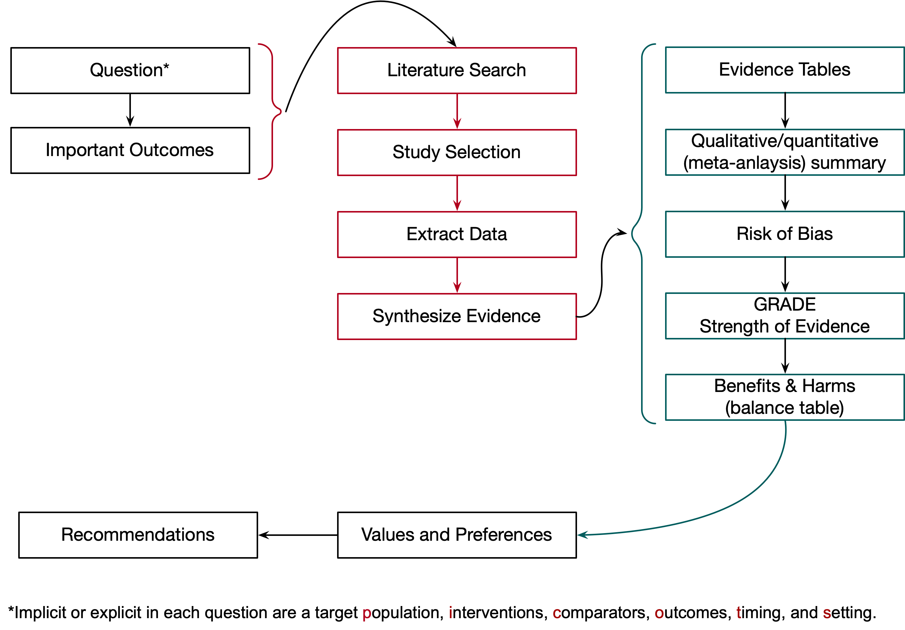

1 Introduction
1.1 Background
Practice parameters are “strategies for patient management developed by the profession to assist physicians in clinical decision making” (Health Subcommittee Hearing, 1990). The methods described here apply to the development of ASA Practice Guidelines and Practice Advisories. They are similar in approach and methodologies but differ in that the evidence included in Advisories is limited in overall quantity, quality, and consistency. Classifying a guidance document as a Practice Advisory is accordingly based on the supporting systematic review. Differences notwithstanding, both types of guidance adhere to standards for trustworthy clinical practice guidelines (Graham, 2011).
The first ASA Practice Guidelines, published in 1993, included management of the difficult airway (Caplan et al., 1993) and pulmonary artery catheterization (Roizen et al., 1993). Initial guideline development followed an approach outlined in the Manual for Clinical Practice Guideline Development (Woolf, 1991) commissioned by the Agency for Health Care Policy and Research1. The approach was state of the art for guideline development at the time detailing 59 steps accompanied by worksheets, table formats, meeting schedules, and goals. While many of those steps became standard practice in ASA guideline development, others were omitted or modified. Over time, some changes to the guideline development process occurred slowly, while others were more frequent, including the strength of evidence ratings (1999, 6 categories;2 2009, 5 categories;3 2010, 4 categories;4 2013, 3 categories5).
Following the release of Clinical Practice Guidelines we can Trust (Graham, 2011) from the National Academy of Medicine and Finding What Works in Health Care: Standards for Systematic Review (Eden, 2011), scrutiny of guideline development increased. In that context, the approach and methods outlined here reflect the evolution of the ASA practice parameter enterprise and their adherence to current standards.
1.2 Overview
Figure 1.1 broadly outlines the structure and main steps followed in developing recommendation for each question and detailed in chapters 3 through # of this manual.

| Date | Modification | Version | Note |
|---|---|---|---|
| 2023-07-24 | None | 0.1 | Initial version |
Predecessor to the Agency for Healthcare Research and Quality (AHRQ).↩︎
Supportive, suggestive, equivocal, insufficient, inconclusive, silent.↩︎
A: supportive literature, B: suggestive literature, C: equivocal literature, D: insufficient evidence from literature, Inadequate.↩︎
A: supportive literature, B: suggestive literature, C: equivocal literature, D: insufficient evidence from literature.↩︎
Category A, Category B, Insufficient Evidence.↩︎